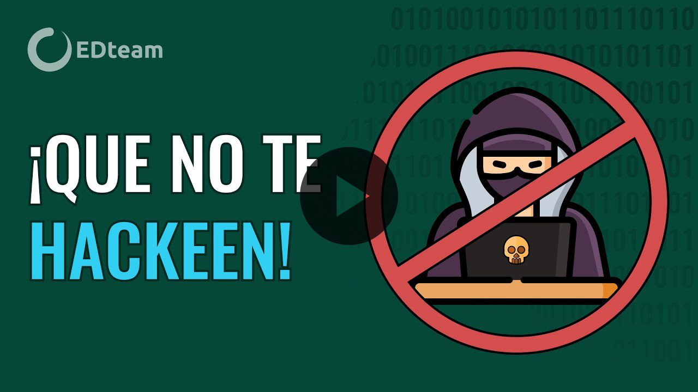
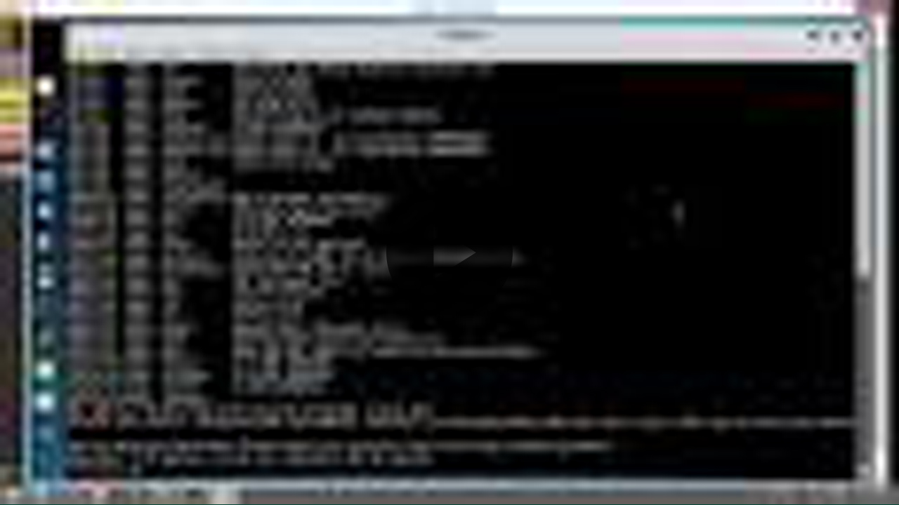

La seguridad informática no solo es para las personas que están metidas en el mundo de la tecnología como programadores o hackers, ¡la seguridad informática es para todos!
abr. 2020 · Subido por EDteamLos hackers y cyberdelincuentes cada vez tienen mayores armas y habilidades no solo para infectar nuestros dispositivos sino también para de esa manera acceder a nuestros datos.
14 abr. 2014 · Subido por TEC
Contamos con entornos propios que te harán experimentar situaciones reales para enfrentarte al mundo laboral.
8 dic. 2011 · Subido por mlClassStaffAhora veamos las 10 normas o medidas obligadas que tenemos que tener en cuenta con nuestro ordenador.
19 abr. 2016 · Subido por AREATECNOLOGIADescubre cuáles son las recomendaciones par mejorar la seguridad informática global según el Future Trends Forum.
7 ene. 2019 · Subido por Fundación Innovación BankinterPara evaluar la seguridad de un dispositivo de hardware, es necesario tener en cuenta las siguientes recomendaciones.
30 nov. 2017 · Subido por Néstor Adrián Aguirre
Seis aplicaciones de hacking para poner a prueba tu red local, identificar ... analistas consideran un problema.
17 may. 2021 · Subido por INCIBEEl firmware que ha incorporado ASUS en este router es el mismo Asuswrt de sus routers tope de gama, vamos ...
17 feb. 2018 · Subido por RedesZone
En pocas palabras, seguridad web son las medidas aplicadas para proteger una página web y garantizar que ...
1 jun. 2020 · Subido por GoDaddy LATAM"Introducción al desarrollo web": qué es la seguridad, fiabilidad, confidencialidad, integridad ...
18 dic. 2017 · Subido por iDESWEB UA